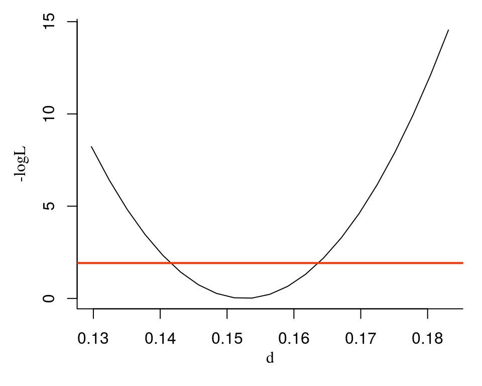

The profile likelihood is estimated by optimising the whole likelihood function, having fixed a parameter under consideration to a certain value. Parameter values for different genes influence each other via shared parameters, for example, the normalisation factors or variance of the negative binomial distribution.
If there are not many genes in the data, that could not be a prolblem. However, usually experimentalists doing RNA-seq experiments are interested in measuring parameters of as many genes as possible, which results in thousands of genes in data tables. Optimising likelihood function for such cases can take a lot of computation time. Hence it can be more efficeint to use approximate fitting by neglecting the influence of individual gene parameters on the shared parameters.
Let us use the model of experiment used in the vignette for application of pulseR to spike-ins-free data:
library(pulseR)
attach(pulseRSpikeinsData)
pd <- PulseData(counts, conditions, formulas, formulaIndexes, spikeins)
formulas <- MeanFormulas(
total = mu,
labelled = mu * exp(-d * time),
unlabelled = mu * (1 - exp(-d * time))
)
formulaIndexes <- list(total_fraction = "total",
pull_down = c("labelled", "unlabelled"))
pd <- PulseData(counts, conditions, formulas, formulaIndexes,
spikeins = spikeins)
opts <- setBoundaries(list(
mu = c(.1, 1e6),
d = c(.01, 2)
))
opts <- setTolerance(params = 1e-3, options = opts)
initPars <- initParameters(par = list(size=10),
geneParams = c("mu", "d"),
pulseData = pd,
options = opts)
fit <- fitModel(pulseData = pd, par = initPars, options = opts)geneIndex <- 7
parName <- "d"
interval <- c(0.85,1.2) * fit[[parName]][geneIndex]
numPoints <- 51
pl <- profileGene(parName, geneIndex, pd, fit, interval,
options=opts, numPoints = 21)
str(pl)
## 'data.frame': 21 obs. of 2 variables:
## $ d : num 0.13 0.132 0.135 0.138 0.14 ...
## $ logL: num 8.22 6.42 4.83 3.47 2.34 ...We can see the result using the plotPL function:
plotPL(pl)
The red line corresponds to the 95% confidence level likelihood threshold. The 95%-confidence interval for the \(d\) parameter is defined from the crossing points of the threshold line and the profile likelihood curve.
Use the ciGene function in order to estimate this points numerically:
geneIndexes <- 1:10
CIs <- ciGene(parName, geneIndexes, pd, fit, opts)
CIs
## [,1] [,2]
## [1,] 0.1425814 0.1787786
## [2,] 0.2564158 0.2874507
## [3,] 0.2230896 0.2501865
## [4,] 0.1069277 0.1308216
## [5,] 0.1960046 0.2198180
## [6,] 0.1512817 0.1739999
## [7,] 0.1415186 0.1636782
## [8,] 0.2676396 0.2906081
## [9,] 0.2738922 0.2965506
## [10,] 0.2368283 0.2588350If the normalisation factors are not fixed, or changes in a single gene parameter result in observed difference in the shared or normalisation parameters values, it is necessary to use the whole likelihood, which is a function of all shared and individual parameters.
plTotal <- profile(paramPath = list("d",geneIndex),
pd = pd,
par = fit,
options = opts,
interval = interval,
numPoints = 20)If the model includes the normalisation factors and we are interested in estimation of the CI for the normalisation factors, it is possible to run the same function in the same manner:
plTotal <- profile(paramPath = list("normFactors",2,1),
pd = pd,
par = fit,
options = opts,
interval = c(1, 3))However, it may result in long computation times, since it is equivalent to refitting the whole model several times.
sessionInfo()
## R version 3.4.0 (2017-04-21)
## Platform: x86_64-pc-linux-gnu (64-bit)
## Running under: Ubuntu 16.04.2 LTS
##
## Matrix products: default
## BLAS: /usr/lib/openblas-base/libblas.so.3
## LAPACK: /usr/lib/libopenblasp-r0.2.18.so
##
## locale:
## [1] LC_CTYPE=en_US.UTF-8 LC_NUMERIC=C
## [3] LC_TIME=de_DE.UTF-8 LC_COLLATE=en_US.UTF-8
## [5] LC_MONETARY=de_DE.UTF-8 LC_MESSAGES=en_US.UTF-8
## [7] LC_PAPER=de_DE.UTF-8 LC_NAME=C
## [9] LC_ADDRESS=C LC_TELEPHONE=C
## [11] LC_MEASUREMENT=de_DE.UTF-8 LC_IDENTIFICATION=C
##
## attached base packages:
## [1] stats graphics grDevices utils datasets methods base
##
## other attached packages:
## [1] pulseR_1.0.0
##
## loaded via a namespace (and not attached):
## [1] compiler_3.4.0 backports_1.1.0 magrittr_1.5 rprojroot_1.2
## [5] tools_3.4.0 htmltools_0.3.6 yaml_2.1.14 Rcpp_0.12.11
## [9] stringi_1.1.5 rmarkdown_1.6 knitr_1.16 stringr_1.2.0
## [13] digest_0.6.12 evaluate_0.10.1